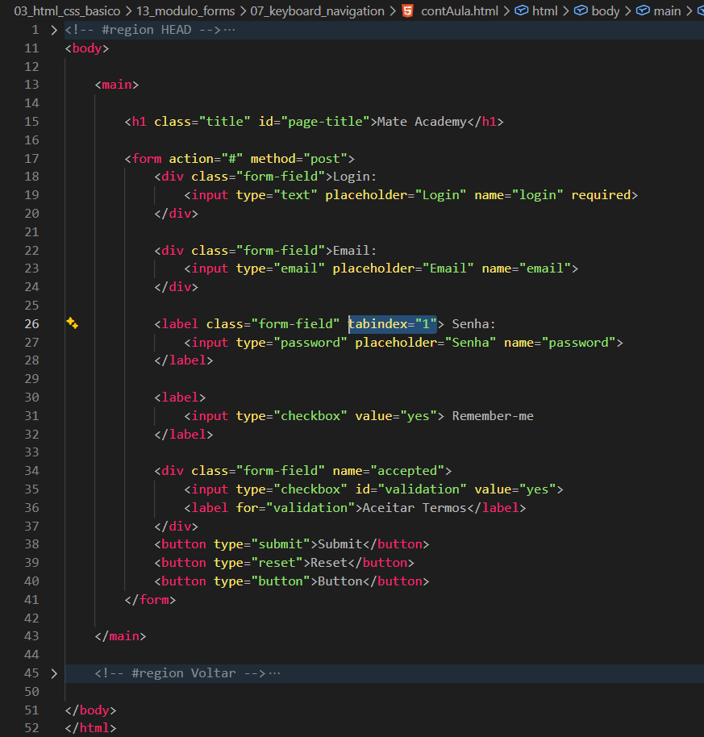

Keyboard Navigation
Intro
Aqui iremos ver sobre a navegacao utilizando o teclado em uma pagina.
Aqui iremos ver sobre a navegacao utilizando o teclado em uma pagina.
HTML:

Um exemplo muito comum e quando fazemos uso da tecla Tab para percorrer os campos de preenchimento de um formulario.
Alem da navegacao padrao utilizando o Tab, tambem podemos definir qual sera o primeiro campo selecionado ou a ordem de navegacao entre os elementos da pagina utilizando alguns atributos.
Com o tabindex, conseguimos definir a ordem de navegacao dos elementos ao utilizarmos a tecla Tab. Como no exemplo da imagem, ao pressionarmos o Tab, o foco pode ser direcionado primeiro para o campo de senha.
Tambem podemos utilizar o valor -1, fazendo com que aquele elemento nao seja acessado pela navegacao utilizando a tecla Tab.
Apesar do tabindex permitir controlar a ordem de navegacao, normalmente e recomendado manter a ordem natural do HTML, pois isso melhora a acessibilidade e facilita a navegacao para os usuarios.
Conteudo da aula